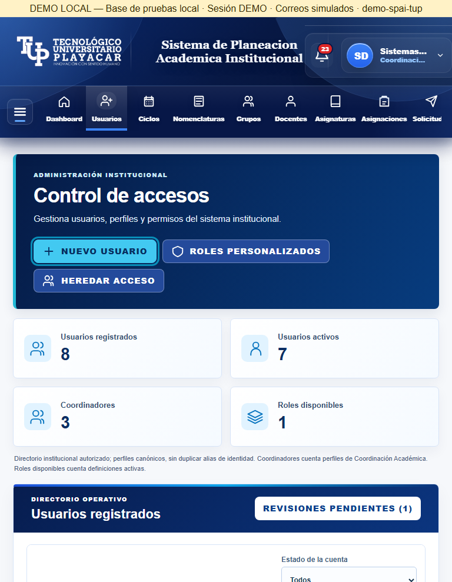
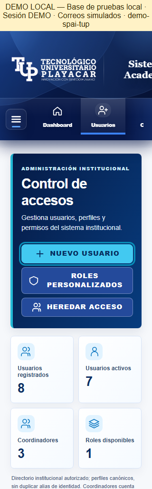
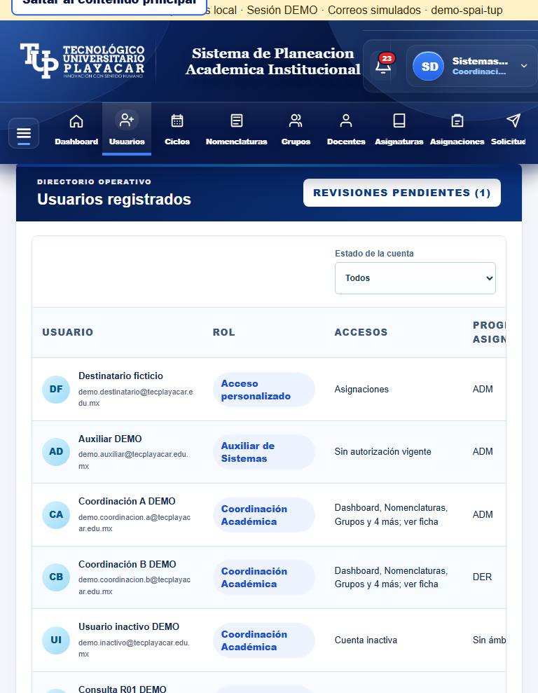
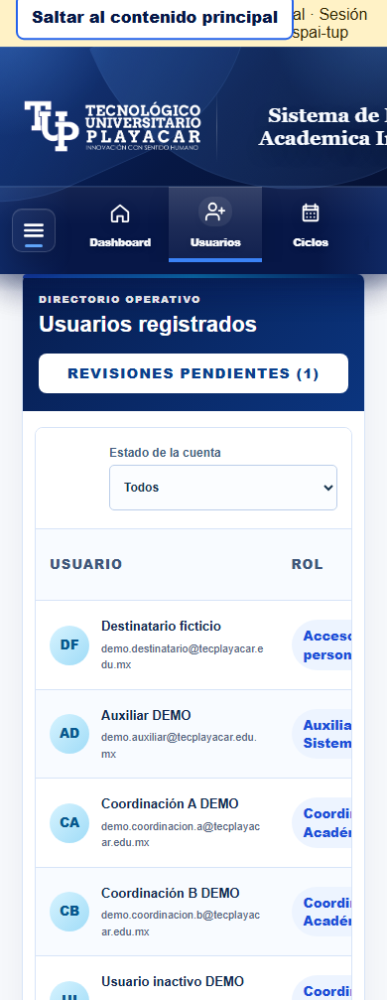
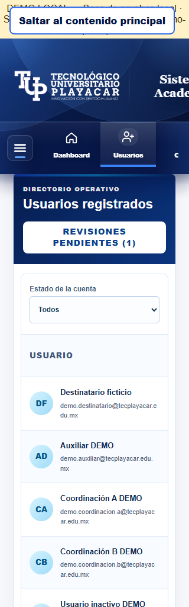
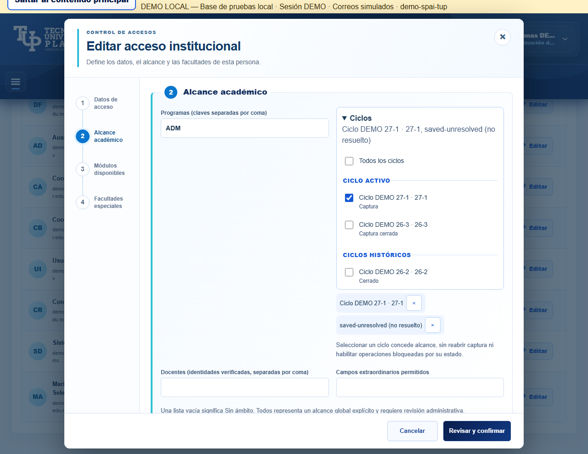
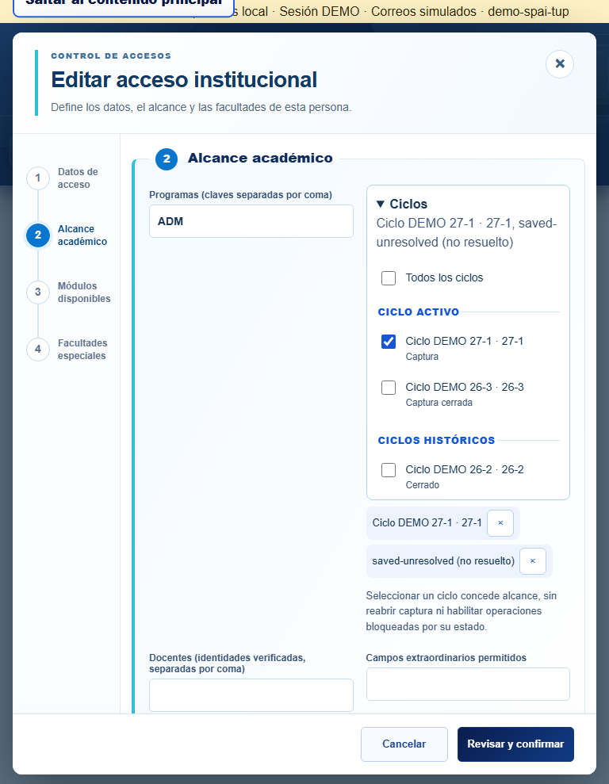
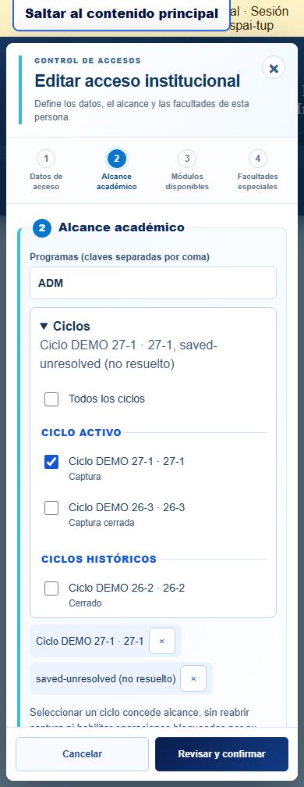
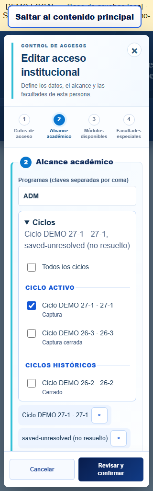
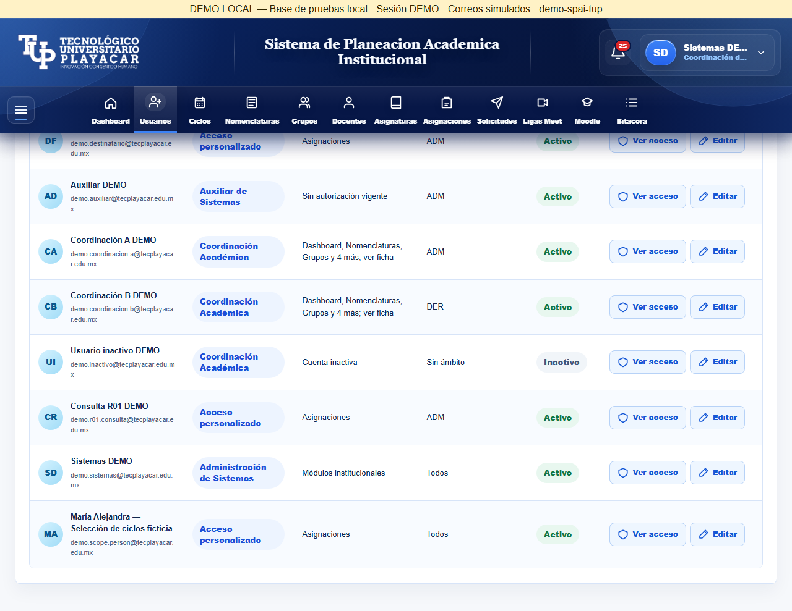

20 de octubre de 2026 · Codex · Datos ficticios aislados. Aceptación visual pendiente del propietario.
Se conservan la composición superior y los estilos institucionales. Sin buscador; filtro de estado compacto. Todos representa únicamente el token global explícito. Los códigos no resueltos permanecen guardados.










Inspección técnica de Codex, no aceptación humana. Prueba directa de Rules inconclusa por diagnóstico del evaluador; ver results.json.